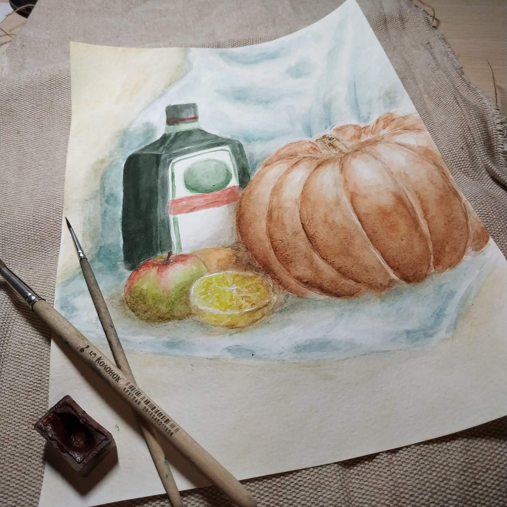
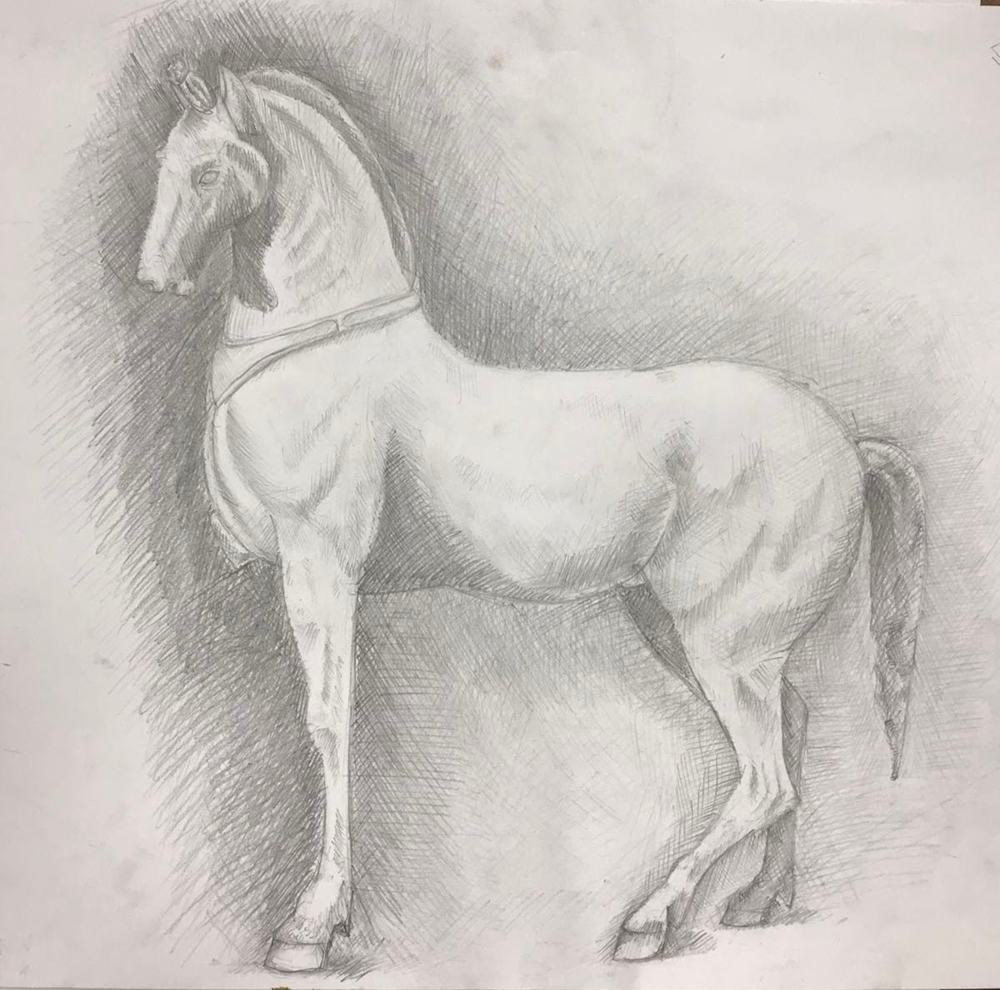
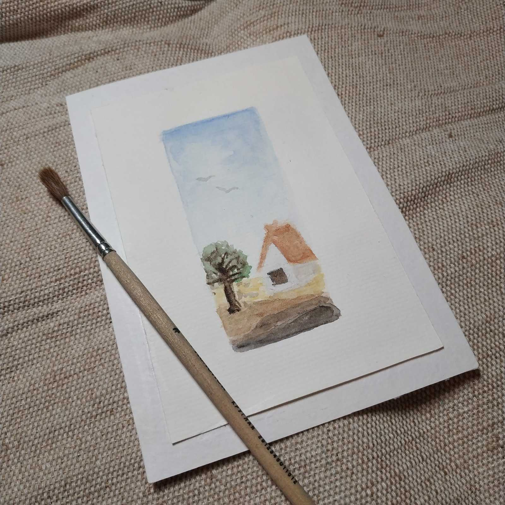
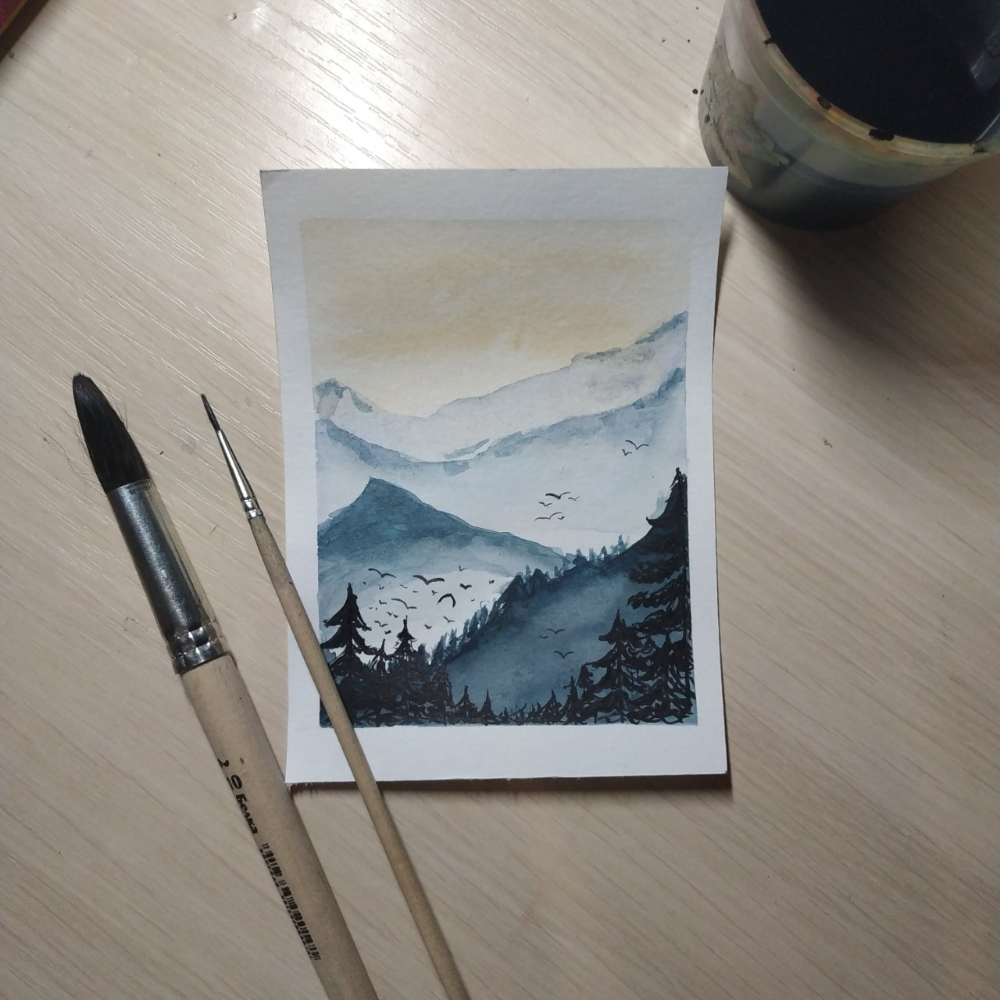

Меня зовут Єлизавета Автодийчук. Сейчас я учусь в физико-математическом лицее, а так же хожу в художественную школу.
Любовь к рисованию у меня появилась ещё с самого детсва. Все пустые листики обязательно заполнялись смешными карикатурами. Потом я ходила в кружок по рисованию и там творила свои "шедевры".
Долгое время я не брала кисточку в руки, ведь учёба и ообщественная деятельность забирали всё свободное время. И когда я всё же вспомнила, что где-то далеко в шкафу пылиться моя любимая акварель, ко мне пришло вдохновение и я начала творить.
Время идёт, и я поняла, что хочу посвятить свою жизнь творчеству и рисованию. Я начала активно искать идеи для творчества, читать литературу, и наконец поступила в художественную школу.
Сейчас свободного времени катастрофически мало, но я всё же стараюсь находить свободную минутку, чтобы посвять её моему любимому делу.
Вот одни из моих работ:
   